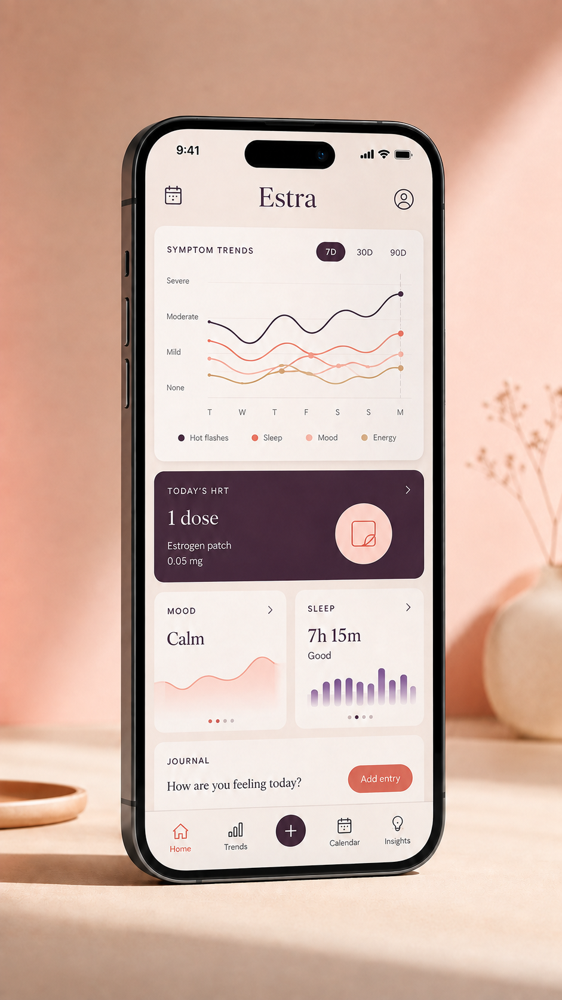

HRT Calibration
Log dosage changes and track how your body responds over time with precise symptom mapping.
The first intuitive journal designed specifically for the HRT and menopause transition. Track symptoms, monitor hormonal shifts, and find your balance.

Log dosage changes and track how your body responds over time with precise symptom mapping.
Identify patterns between nocturnal wakefulness and daytime fatigue to optimise your rest.
Generate clearly structured PDF summaries to share with your healthcare provider during visits.
We believe this transition is not a clinical problem to be solved, but a phase of life to be navigated with grace. Estra gives you the data you need without the hospital-room aesthetic.
Have a question about Estra, need help with the app, or want to share feedback? Send us a note.
Contact Estra